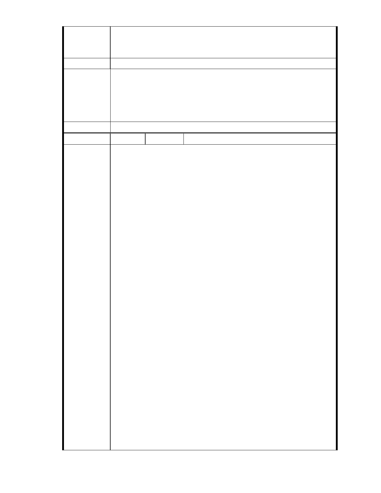

五、 本案後續所有會勘、審議，請依政府資訊公開法，將會議時間、
地點、會議資料、紀錄等相關資訊提前公開上網，俾便閱覽。
建議辦法
一、本案申請範圍於慈濟購得前已遭填平破壞作汽車停車場使用，已長
市府說明
年不具保護區之功能；目前申請方案較先前方案已大幅降低開發強
度、調整使用項目並承諾大面積滯洪設施等回饋事項，顯示申請單
位欲改善現況之誠意。
二、相關陳情意見將納入本案審查人民意見，依法定程序辦理。
委 員 會 決 議 同編號 1。
編號
陳情理由
129 陳情人 台北市內湖保護區守護聯盟（MA201210150242）
主旨
有關「變更臺北市內湖區成功路五段大湖公園北側部分保護區及道路用
地為社會福利特定專用區主要計畫案」，本聯盟依據 貴委員會專案小組
會勘紀錄及會議紀錄，提出反對變更保護區陳情意見，敬請查照。
說明
一、 依據都市計畫法第 19 條第 1 項規定辦理。
二、 基於台北市保護區劃設的目的與意義、全球氣候驟變下的極端天
候，以及保護區對於台北市內湖區大湖里的重要價值，認為水土保持、
天然資源、生態與都市排水蓄洪等功能，應優先於社會福利設施開發使
用。
三、 依據 貴會 94 年 8 月 25 日專案小組會勘紀錄：「三、依民國 59 年
之航照圖視之，原北基地應屬大湖之一部分，對照於中部地區水利地遭
居民佔用所造成之災害，則本案原「水利地」的功能是否仍應保留值得
再做探討」，以及大湖山莊街與後方農地因北基地非法填土後遭受多次天
然災害紀錄，建議應保留原溜地目「第三類水利地」功能，反對變更為
社會福利設施，以避免妨礙都市排水。
四、 依據發展局在民國 90 年 10 月 11 日「台北市納莉颱風災後重建推
動委員會」坡地防災組的總結報告經送市長核定結論為「…保護區及山
坡地的過度開發與利用，確實是坡地災害的主要原因，也是平地淹水的
主要原因…」，故而強烈建議「…暫緩開發利用保護區（山坡地）…」。
以及 貴會 95 年 10 月 11 日第六次專案小組會議紀錄：「陳教授宏宇：3、
本案不僅為保護區，更是座落於溝谷中的地質敏感區，比對雞南山危險
聚落之山勢，實在有諸多相似之處。發展局也曾邀請學者、專家就本案
之地質安全、水土保持、逕流沖刷、邊坡穩定、排水措施等各項議題提
出建議，很遺憾的，包括本人在內的幾位受邀者，均很無奈的拒絕參加
這種硬要以“人定勝天”技術克服一切的方式，來背負這個個案開發的背
書者」，反對變更山坡地保護區做為社會福利設施用地。
五、 本聯盟是由一群社區裡的家庭主婦、退休居民和學生所組成，大
家自掏腰包捐出買菜錢、退休金、和打工賺來的零用錢，只希望能用一
- 141 -